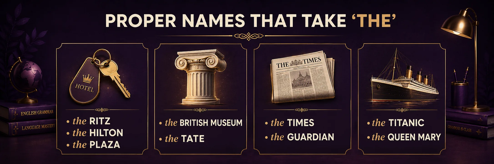
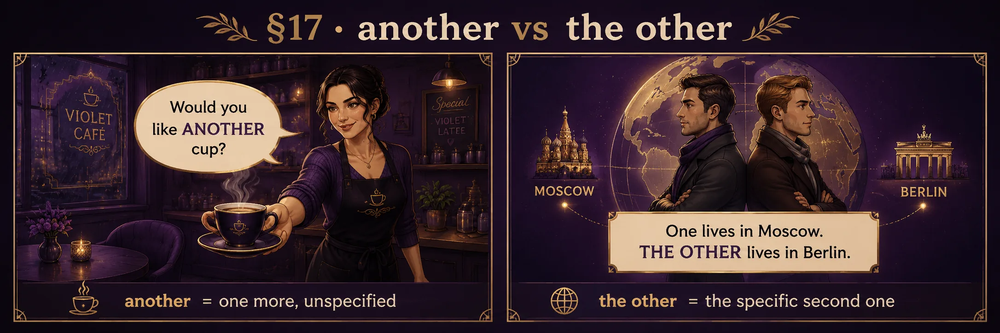
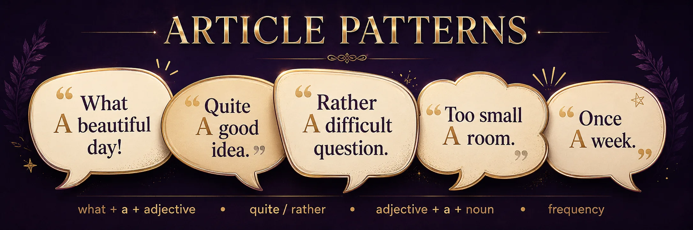
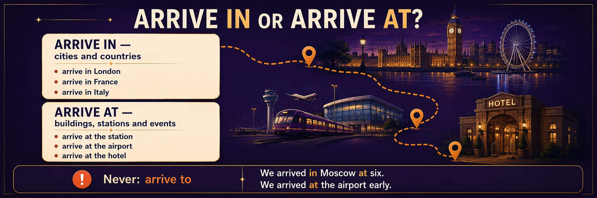
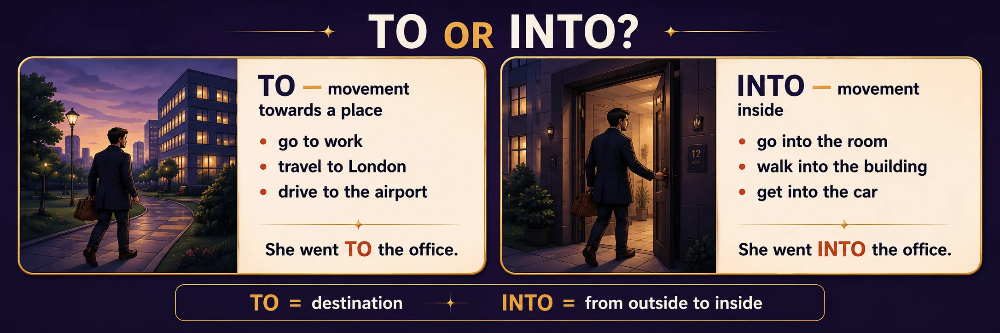

Tap the poster to zoom · each rule below → drill straight after · nail it, move on.
A.0 Read the poster · choose the correct sentence
10 mini pairs across all four columns (A / AN / THE / ZERO). Read the poster first, then pick the version that matches the rule.
1.First time we see the object — pick one.
2.Vowel sound at the start — pick one.
3.Talking about something both speakers know — pick one.
4.Plural noun in general — pick one.
5.Uncountable noun in general — pick one.
6.Unique object in the world — pick one.
7.Meal in general — pick one.
8.Sport in general — pick one.
9.Specific room we're both looking at — pick one.
10.Language name — pick one.
§1 First mention → repeat
First time we mention something → a / an. Second time → the (the listener already knows which one).
This is a book. The book is interesting.
A.1 Fill the gap · Ex. 1 & 3 (Golitsynsky)
1.This is ___ pen. That is a pencil.
2.This is a tree. ___ tree is green.
3.I got ___ letter from my friend yesterday.
4.… ___ letter was long and interesting.
5.He has got ___ computer.
6.He is showing me his new computer. ___ computer is new.
7.I bought ___ new umbrella. But I've already lost it.
8.… ___ umbrella was black.
9.Our office is in ___ old building near the river.
10.… ___ building has three floors and a small garden.
§2 a / an — singular countable only
With uncountables (meat, water, air) and plurals (books, cats) — × on first mention. On second mention — the.
This is × meat. The meat is fresh.
These are × books. The books are good.
A.2 a / an / × · Ex. 4 (Golitsynsky)
1.This is ___ pen.
2.These are ___ pencils.
3.This is ___ soup.
4.I eat ___ sandwich and drink tea in the morning.
5.He never eats ___ meat.
6.She bought ___ butter and potatoes.
7.Would you like ___ coffee?
8.My mother is ___ nurse.
9.We saw ___ children playing in the yard.
10.He works as ___ waiter on Saturdays.
A.2b Match · article ↔ situation
Drag the tag to the matching article rule.
Article
Situation
§3 After a determiner — no article
If the noun already has my / his / her / their / this / that / these / those / Peter's / two / three / no in front of it — no article. The determiner already does the job.
This is my × book. — Give me those × pencils. — I have no × pet.
Rule: no article after a possessive, demonstrative, number, or the negative no.
A.3 Article or not? · Ex. 1 & 2 (Golitsynsky)
1.This is my ___ book.
2.They have got two ___ cats.
3.Is this your ___ pencil?
4.I have no ___ idea what to do.
5.My sister's ___ husband is a doctor.
6.They know our ___ address.
§4 Adjective between article and noun
The article does not change when we add an adjective. It just moves one step to the left.
This is a book. → This is a good book. → This is a very good book.
The weather → The nice weather → The very nice weather
A.4 a / an / the / × · Ex. 6 (Golitsynsky)
1.We have ___ large family.
2.My father is ___ good engineer.
3.He works in ___ large factory.
4.She is ___ excellent teacher.
5.It's ___ small animal that has long ears.
§5 the — for unique objects
Unique in the world: the sun · the moon · the sky · the earth · the world · the universe. Unique in this room: the table · the door · the window (the specific one we both mean).
The sky is grey today. — Put the book on the table.
A.5 the or ×? · Ex. 7 (Golitsynsky)
1.What's ___ weather like today?
2.___ sun is yellow.
3.___ Earth is a planet.
4.You can't see ___ moon in the sky tonight.
5.Put the book on ___ table.
6.___ sky is blue today.
§6 After what / which / whose — no article
The interrogative or relative pronoun already replaces the article.
What × colour is your hat? — Which × book did you read? — Whose × pen is this?
A.6 Article or not? · Ex. 27 (Golitsynsky)
1.What ___ colour is your new hat?
2.What ___ bus do you take to work?
3.Whose ___ pen is this?
4.What ___ books do you like to read?
5.Which ___ city is the capital of Australia?
§7 the — superlatives, ordinals, only / same / right
the best · the highest · the most interesting
the first · the second · the last
the only child · the right way · the same day
Everest is the highest mountain in the world.
A.7 Superlative & ordinal · Ex. 33 (Golitsynsky)
1.Nick is ___ strongest boy in the class.
2.February is ___ shortest month of the year.
3.May is ___ fifth month of the year.
4.It was ___ most interesting film I've ever seen.
5.He is ___ only child in the family.
6.Kate and I arrived at ___ same time.
📖 Zero article — where we drop it
Rules §8–§11 all belong to this cluster. Read the poster, then work each rule in order.
§8 Parts of the day, meals, "go to bed"
in the morning · in the afternoon · in the evening · but at night · at noon
× with meals in general: have × breakfast · cook × lunch · make × dinner
× with "go to" + institution used for its main purpose: go to × bed (to sleep) · go to × school (as a student) · go to × work · be in × hospital (as a patient)
Mum went to the school to meet the teacher. — I sat on the bed and read.
A.8 Parts of day + bed/school · Ex. 16 (Golitsynsky)
1.He gets up early in ___ morning.
2.He goes to ___ school.
3.He usually goes to ___ bed at half past ten.
4.At ___ night he sleeps well.
5.What do you have for ___ breakfast?
6.Mum went to ___ school to see the teacher.
§9 Set phrases · to the cinema · in town · by car
to the cinema / theatre / shop / market · at the cinema / theatre / shop / market · to go for a walk
in town · in the country (= outside the city) · to town · to the country
Transport: by bus / tram / train / car (no article)
Moments: at sunrise · at sunset (× no article)
We went to the cinema by × bus. — On Sunday we went to the country.
A.9 Cinema / bus / country · Ex. 47 & 58 (Golitsynsky)
1.Let's go to ___ shop.
2.I was at ___ cinema yesterday.
3.Did you go for ___ walk yesterday?
4.We went there by ___ train.
5.On Sunday our family went to ___ country.
6.At ___ sunset we returned home.
§10 Play × chess vs play the piano
Games and sports — ×: play × football / tennis / chess / badminton.
Musical instruments — the: play the piano / guitar / violin.
The boys are playing × football. — My sister plays the guitar.
A.10 Games / instruments · Ex. 31 (Golitsynsky)
1.Boys like to play ___ football.
2.I often play ___ chess with my grandfather.
3.She likes to play ___ piano.
4.Do you like to play ___ tennis?
5.He can play ___ guitar very well.
§11 Languages, subjects, days, months, names — ×
Languages: × English · × Russian. But: the English language.
School subjects: × Mathematics · × Physics · × Chemistry
Days / months: × Monday · × January · × summer (in general)
Proper names: × Peter · × Mary · × Mr Brown
Whole family: the Browns · the Smiths
A.11 Language / subject / day · Ex. 29 & 30 (Golitsynsky)
1.___ English is a world language.
2.Do you speak ___ Spanish?
3.He studies ___ physics at university.
4.We wrote a paper in ___ mathematics.
5.On ___ Sunday she goes to the country.
6.___ Browns are our neighbours.
§12 University names — ×
No article before a university named after a place: St Petersburg University · Oxford University · Harvard University · Cambridge University · Moscow University. But: the University of Oxford / of Cambridge (with "of").
He wants to enter × Moscow University. — I study at × St Petersburg University. — He graduated from the University of Cambridge.
Priority rule for your Master's applications — say the name the exact way admissions expect.
A.12 University · Ex. 42 (Golitsynsky)
1.He studies at ___ Harvard University.
2.Galina wants to enter ___ Moscow University.
3.She graduated from ___ University of Edinburgh in 2020.
4.Ilse is a German student at ___ Cambridge University.
§13 Hotels, museums, newspapers, ships — the
Hotels: the Ritz · the Hilton · the Plaza
Museums / galleries / theatres: the British Museum · the Tate · the National Concert Hall
Newspapers: the Times · the Guardian · the New York Times
Ships: the Titanic · the Queen Mary
They came to × New York and stayed at the Plaza Hotel.

A.13 Hotel · newspaper · Ex. 48 (Golitsynsky)
1.Three men came to ___ New York for a holiday.
2.They came to ___ very large hotel.
3.I usually read ___ Times in the morning.
4.We visited ___ British Museum last week.
5.We went to a concert at ___ National Concert Hall.
§14 Titles and appointments — ×
Titles + proper names: × Queen Anne · × Professor Higgins · × King Lear · × General Washington · × President Kennedy
After the verbs appoint / elect / make / crown / become, no article before the role:
They appointed him × secretary. — He was elected × chairman. — They crowned him × king. — He became × President.
A.14 Titles · Ex. 43 (Golitsynsky)
1.___ Queen Elizabeth II reigned for 70 years.
2.He was elected ___ chairman of the committee.
3.They made him ___ captain of the team.
4.He became ___ President in 2008.
5.___ Professor Higgins is a strict teacher.
§15 Geographical names · the vs ×
the:
oceans, seas, gulfs, straits, rivers, canals: the Pacific · the Black Sea · the Nile · the Volga
mountain ranges (plural): the Alps · the Urals · the Rockies
island groups: the Shetland Islands · the Philippines · the British Isles
fixed exceptions: the USA · the UK · the Netherlands · the Ukraine · the Crimea · the Hague
×: cities · most countries · continents · single mountains (Everest, Elbrus) · single lakes with the word Lake (Lake Baikal)
A.15 Geography · Ex. 37 (Golitsynsky)
1.___ Pacific Ocean is very deep.
2.___ Elbrus is the highest peak of the Caucasus.
3.___ Lake Baikal is the deepest lake in the world.
4.___ Urals are not very high.
5.___ Nile flows across Africa to the Mediterranean Sea.
6.Is ___ Paris the capital of France?
7.She was born in ___ USA.
8.He lives in ___ Netherlands.
§16 Compass points — in the / to the
in the north · in the south · in the east · in the west (location)
to the north · to the south · to the east · to the west (direction)
The Black Sea is in the south of our country. — Kiev is to the south of Moscow.
A.16 Direction · Ex. 36 (Golitsynsky)
1.Russia is washed by the Arctic Ocean in ___ north.
2.Kiev is to ___ south of Moscow.
3.The White Sea is in ___ north of our country.
4.The Philippines are situated to ___ southeast of Asia.
§17 another vs the other
another = one more, a different one (not the one already mentioned)
the other = the second of two, the one both speakers know about
Plural: other (without "an") = different ones / the other (with the) = the rest
Would you like another cup of coffee? — This is one hand, and this is the other hand.
Some students went to the cinema; other students went home. — Some students stayed; the other students all went home.

A.17 another / the other · Ex. 56 (Golitsynsky)
1.Would you like ___ cup of tea?
2.I have two brothers. One lives in Moscow, ___ lives in Berlin.
3.Let's ask ___ question.
4.On one side of the street there is a school, and on ___ side there is a park.
5.Give me ___ pencil, please. This one is broken.
§18 Apposition · "the writer Dickens" vs "Dickens, a writer"
When the profession stands before the name as an identifier — the:
The famous English writer Dickens lived in the 19th century.
When the profession follows the name after a comma as explanation — a / an:
Dickens, a famous English writer, lived in the 19th century.
A.18 Apposition · Ex. 49 & 67 (Golitsynsky)
1.___ famous Russian poet Pushkin was born in 1799.
2.Nekrasov, ___ famous Russian poet, described the life of peasants.
3.___ great English novelist Charles Dickens knew about debtors' prisons.
4.Barack Obama, ___ 44th President of the United States, was born in 1961.
§19 What a! · Such a! · Quite a! · Too small a room
Exclamations: What a beautiful day! · What an interesting book!
Such + adj + noun: Such a nice person! · Such a long journey!
Quite / rather: Quite a good idea · Rather a difficult question
Word order with too / so / as / how: Too small a room · So big a mistake
Frequency: Once a week · Twice a day · Fifty km an hour
Addressing people — ×: What are you doing, × children?

A.19 Exclamations · Ex. 32 & 33 (Golitsynsky)
1.What ___ beautiful day!
2.What ___ interesting book!
3.It's such ___ shame!
4.She earns fifty pounds ___ hour.
5.What are you doing, ___ children?
§20 Set expressions · quick cheat sheet
in the middle · in the corner
to the right · to the left
in front of · in fact · the same
after a while · from place to place
at sunrise · at sunset
from morning till night · all day long
to have a good time · a lot of · a great deal
it's high time to · to take care of
The fact is that… · What's the use?
the rest of the… · for life · in a day/week
Learn these as fixed phrases — they don't follow general rules.
A.20 Set expressions · quick check
1.The TV set is in ___ corner of the room.
2.Did you have ___ good time in the country?
3.It's ___ high time to leave.
4.In ___ fact, he was often short of money.
5.They arrived at ___ same time.
A.21 Say it out loud · personal answers
Answer full sentences. Watch your articles — teacher will listen for them.
1.What is the highest mountain in your country?
2.What newspaper do you read most often?
3.Do you play a musical instrument? Which one?
4.Which sport do you like watching on TV?
5.What time do you usually go to bed?
6.Have you ever been to the USA or the UK?
Starter frames
The highest mountain in… is… / I usually read… / I play the… / I like watching… / I usually go to bed at… / I have (never) been to…
+
Extra drills · articles · mixed practice
reading · gap-fill · matching · big mix
A.22 Story gap-fill · Marco's Monday · 15 gaps
Drag each article to the right gap. Read the whole story first.
athethe×thethe×athe×anthe×athe
1.Marco lives in small flat in centre of Milan.
2.Every morning he takes underground to work.
3.He usually reads newspaper on train.
4.At nine he has breakfast at his desk — usually croissant with coffee.
5.His boss called meeting for eleven to discuss Q3 targets.
6.After work, Marco goes to Italian restaurant near station.
7.On Sundays he plays tennis with friend from office.
A.23 Match · rule ↔ example
Six rules from §1–§20. Click the rule, then click the matching sentence.
Rule
Example
A.24 Big Articles Drill · 30 items · mixed §1–§20
Final push for articles only. No prepositions here. Watch for determiners, uniqueness, uncountables, and set phrases.
1.She's got ___ new car.
2.___ car is red.
3.I don't drink ___ coffee in the evening.
4.Could you close ___ door, please?
5.He speaks ___ German fluently.
6.What's ___ capital of Portugal?
7.This is my ___ favourite song.
8.He arrived ___ hour ago.
9.She's ___ university student.
10.We saw ___ best film of the year.
11.He was born on ___ 20 March 1990.
12.Have you seen ___ new James Bond?
13.Marco doesn't drink ___ milk.
14.Look at ___ moon tonight — it's huge!
15.___ Alps are Europe's biggest mountain range.
16.We're going to ___ Italy next month.
17.I saw him at ___ theatre yesterday.
18.Would you like ___ tea?
19.Please pass ___ salt.
20.Cats hate ___ water.
21.He's ___ honest man — you can trust him.
22.He's ___ European by birth.
23.Which ___ team do you support?
24.Once ___ month I go to the theatre.
25.He wants to become ___ Prime Minister one day.
26.She earns fifty pounds ___ hour as a tutor.
27.I stayed at ___ Ritz in Paris.
28.Have you got ___ time to help me?
29.What was ___ weather like on holiday?
30.She's got ___ long brown hair.
A.25 Speaking · use articles in your answers · 10 prompts
Answer in full sentences. Say each answer out loud. Watch for a / an / the / ×.
1.What did you have for breakfast this morning?
2.How do you usually get to work?
3.What's the name of the last book you read?
4.Who is the most interesting person you know?
5.Which country would you like to visit and why?
6.What time do you usually leave home?
7.Do you prefer the sea or the mountains?
8.What's the best restaurant in your city?
9.Do you play any musical instrument?
10.What did you do at the weekend?
Starter frames
I had a / an / × … · I take the … · The last book I read was … · The most interesting person is … · I'd like to visit × … / the …
P
Prepositions · time / place / direction / collocations
6 blocks · rules + drills
P1 Time · at / on / in
Compare:
They arrived at 5 o'clock. — on Friday. — in June / in 2024.
at — exact clock time: at 11.45 · at midnight · at lunchtime · at sunset
on — days and dates: on Friday · on 16 May 2024 · on New Year's Day · on my birthday
in — long periods: in June · in 2024 · in winter · in the 1990s · in the 20th century · in the past
Special "at" phrases: at the moment / at present / at the same time / at the weekend / at Christmas (but on Christmas Day) / at night (in general) — but in the night (a specific night).
Special "in" phrases: in the morning(s) / in the afternoon(s) / in the evening(s). But:on Friday morning · on Sunday afternoon · on Monday evening.
No preposition before last / next / this / every: I'll see you next Friday (not "on next Friday"). In informal speech we also drop on before days: I'll see you Friday.
in a few minutes / in six months / in a week = a time from now: Andy has gone away. He'll be back in a week.
P.1 Put in at, on, in · 22 items
inoninatonininatonatininatoninAtinonatatoninonin
1.Mozart was born Salzburg 1756.
2.I've been invited to a wedding 14 February.
3.Amy's birthday is May.
4.This park gets very busy weekends.
5.I last saw Kate Tuesday.
6.Jonathan will be retiring two years.
7.I'll be with you a moment.
8.Sam isn't here the moment.
9.There are usually a lot of parties New Year's Eve.
10.I try to avoid going out night.
11.It rained very hard the night.
12.My car will be ready two hours.
13.A lot of buses were leaving the same time.
14.They always go out for dinner their wedding anniversary.
15.I read it a day.
16. midday, the sun is at its highest point.
17.This building was built the fifteenth century.
18.The office is closed Wednesday afternoons.
19.Many people go home to see their families Christmas.
20.My flight arrives 5 o'clock the morning.
21.The course begins 7 January and ends April.
P.2 Which is correct: a, b, or both?
Watch for on next / in last / at the same time / on the weekend.
1.(a) I'll see you on Friday. · (b) I'll see you Friday.
2.(a) I'll see you on next Friday. · (b) I'll see you next Friday.
3.(a) Paul got married in April. · (b) Paul got married April.
4.(a) I play tennis on Sunday mornings. · (b) I play tennis Sunday mornings.
5.(a) We were ill at the same time. · (b) We were ill in the same time.
6.(a) at the weekend? · (b) on the weekend?
7.(a) Oliver was born at 10 May 1993. · (b) Oliver was born on 10 May 1993.
8.(a) He left school last June. · (b) He left school in last June.
9.(a) Will you be here on Tuesday? · (b) Will you be here Tuesday?
10.(a) I don't like driving in night. · (b) I don't like driving at night.
P2 on time · in time & at the end · in the end
on time = punctual, on schedule. The 11.45 train left on time.
in time (for something) = soon enough, before it starts. Will you be home in time for dinner?
just in time = almost too late. We got to the station just in time for our train.
at the end (of) = at the moment when something finishes. at the end of the month · at the end of the concert. Opposite: at the beginning of.
in the end = finally, after everything. We had a lot of problems with the car. We sold it in the end. Opposite: at first.
Never say "in the end of January" — only at the end of January.
P.3 on time or in time
on timein timeon timein timeon timein timein timeon timein time
1.The bus is usually , but it was late this morning.
2.The film didn't begin .
3.The trains are rarely .
4.We got to the station just .
5.We want to start the meeting .
6.I hope the shirt will be dry .
7.I remembered Joe's birthday .
8.Why are you never ?
9.The new stadium will be ready for the tournament.
P.4 at or in — the end / the beginning
1.I'm going away ___ the end of the month.
2.___ the end he got a job as a bus driver.
3.I didn't buy her anything ___ the end.
4.___ the end of the lesson, all the students left.
5.At first there were problems, but ___ the end everything was OK.
6.The journey took long, but we got there ___ the end.
P3 Place · in / at / on
in — inside a space or volume: in a room · in a building · in a box · in a garden · in a town · in the city centre · in a pool · in the sea · in a river · in the mountains.
at — at a point or specific spot: at the bus stop · at the door · at the window · at the traffic lights · at reception · at the entrance.
on — on a surface or line: on the wall · on the table · on the floor · on the ceiling · on a page · on an island · on the beach · on the coast · on the left / right.
There is somebody at the door. — There is a notice on the door. — I'll meet you in the hotel lobby (building) but at the entrance to the hotel (outside).
in a line / in a row / in a queue · in a picture / in a photo · in a book / in a newspaper · in the sky · in the country (= not in a city).
on the ground floor / on the first floor · on a map / on a list / on a page / on a website · on a river / on the coast · on the way (home).
at the top / at the bottom / at the end (of something).
in the front / in the back of a car, but at the front / at the back of a building, and on the front / on the back of an envelope.
in the corner of a room · at / on the corner of a street.
P.5 Choose in / at / on · place drill (14 items)
1.There was a long queue of people ___ the bus stop.
2.Nicola was wearing a silver ring ___ her little finger.
3.There was a security guard standing ___ the entrance.
4.There was no name ___ the door.
5.There are plenty of shops ___ the town centre.
6.You'll find the weather forecast ___ the back page of the newspaper.
7.The headquarters of the company are ___ California.
8.I couldn't spend the whole day sitting ___ a desk.
9.The man has a scar ___ his right cheek.
10.Get off ___ the stop after the traffic lights.
11.Have you ever slept ___ a tent?
12.Emily was sitting ___ the balcony reading a book.
13.My brother lives ___ a small village.
14.I like that picture hanging ___ the wall.
P4 in hospital · at work · at a party
in bed / in hospital / in prison — state: James is still in bed. Anna's mother is in hospital.
at home / at work / at school / at university: I'll be at work until 5.30. My sister is at university.
at + event (party, concert, wedding, meeting, conference): Were there many people at the party?
Buildings: at vs in. Use at for where an event happens; use in when you mean the building itself: We had dinner at the hotel. All the rooms in the hotel have air conditioning.
Cities — in, stations on a route — at: The Louvre is a famous museum in Paris. — Does this train stop at Oxford?
Transport:on a bus / on a train / on a plane / on a ship / on a bike / on a horse, but in a car / in a taxi.
P.6 Complete with in / at / on · buildings, events, transport
1.We went to a concert ___ the National Concert Hall.
2.There isn't a shop ___ the village where I live.
3.Joe wasn't ___ the party. I don't know why.
4.There were about ten tables ___ the restaurant.
5.Perhaps I left my umbrella ___ the bus.
6.What do you want to study ___ university?
7.I didn't feel well when I woke up, so I stayed ___ bed.
8.We were ___ Sarah's house last night.
9.It stopped ___ every station.
10.Shall we travel ___ your car or mine?
11.Ben followed ___ his motorbike.
12.Two people are still ___ hospital after the accident.
P5 Direction · to / at / in
to — movement: go to China · come to my house · drive to the airport · a trip to Paris · Welcome to our country!
Compare movement vs position: They are going to France. — They live in France.
be / have been to — for visits: I've been to Italy four times, but I've never been to Rome.
P5a Arrive in · Arrive at · Get to
get to a place, but arrive in a town/country, arrive at a building/event. Never "arrive to".
They got to the hotel at midnight. — They arrived in Madrid a week ago. — What time did you arrive at the airport?

P5b Into · Out of · Home (× no prep)
into / out of — in/out of an enclosed space: She got into the car and drove away. — She got out of the car. With buses/trains/planes: get on / get off.
home — no preposition: go home · come home · get home · arrive home · on the way home. Never "to home".

P.7 to / at / in / into / — (no prep) · 15 items
Blank = × (no preposition).
1.Three people were taken ___ hospital.
2.Let's go ___ home now.
3.We left our luggage ___ the station.
4.Shall we take a taxi ___ the station?
5.The Amazon flows ___ the Atlantic Ocean.
6.I walked ___ home.
7.Have you ever been ___ Canada?
8.I managed to climb ___ the house through a window.
9.We got stuck in traffic on our way ___ the airport.
10.We had lunch ___ the airport.
11.It took four hours to get ___ the top of the mountain.
12.Welcome ___ the hotel!
13.We turned ___ a narrow side street.
14.Carl was born ___ Chicago.
15.His family moved ___ Boston when he was three.
P.8 arrive / get · at / in / to / —
1.What time does this train get ___ London?
2.They arrived ___ Barcelona a few days ago.
3.What time did you get ___ home last night?
4.What time do you usually arrive ___ work?
5.When we got ___ the cinema, there was a long queue.
6.We arrived ___ home very late.
P6 Other uses · in · on · at
in the rain / in the sun / in the shade / in the dark / in bad weather
in a language (in English) / in a currency (in dollars) / in a good/bad mood / in love / in my opinion
on TV / on the radio / on the phone / on fire / on purpose / on the whole
(be/go) on holiday / on a trip / on a cruise / on business / on strike / on a diet
at the age of 16 · at 100 km/h · at 100 degrees Celsius
P.9 in / on / at · mixed 20 items
1.Water boils ___ 100 degrees Celsius.
2.I went ___ a trip to France with my school.
3.Julia's grandmother died ___ the age of 90.
4.I don't want to sit ___ the dark.
5.We didn't go ___ holiday last year.
6.I hate driving ___ fog.
7.Technology has developed ___ great speed.
8.David got married ___ 19.
9.I listened to an interesting programme ___ the radio.
10.I wouldn't like to go ___ a cruise.
11.The earth travels round the sun ___ 107,000 km an hour.
12.I'm supposed to be ___ a diet.
13.Houses were damaged ___ the storm.
14.I won't be here next week. I'll be ___ holiday.
15.He spends most of his time talking ___ the phone.
16.___ the whole, I enjoyed the holiday.
17.___ your opinion, what should I do?
18.He always seems to be ___ a good mood.
19.Violent films shouldn't be shown ___ TV.
20.The guidebook is available ___ several languages.
P7 Adjective + preposition · collocations
Skills: excellent at, experienced in, expert on/in, capable of, supply with
Emotions: ashamed of, proud of, sorry for, keen on, fond of
Achievements: succeed in, take pride in, praise for, congratulate on, respected for
Relations: concentrate on, deal with, provide with, cooperate with, interested in
Comparisons: famous for, similar to, responsible for
P.10 Fill in the preposition · 21 items
1.He is respected ___ his knowledge and experience.
2.She is excellent ___ solving difficult math problems.
3.The coach received praise ___ leading the team to victory.
4.I want to congratulate you ___ your promotion.
5.He felt ashamed ___ his actions.
6.She is proud ___ her achievements.
7.They hope to succeed ___ their goals.
8.Our company will provide you ___ training.
9.The teacher takes pride ___ her students' accomplishments.
10.She is capable ___ managing a large team.
11.We should cooperate ___ each other.
12.He is keen ___ learning new languages.
13.That restaurant is famous ___ its pizza.
14.The scientist is an expert ___ renewable energy.
15.She needs to concentrate ___ her studies.
16.I am sorry ___ missing your birthday party.
17.He is interested ___ photography.
18.We need to supply guests ___ more food.
19.She is fond ___ hiking.
20.What qualities are similar ___ those of a good leader?
21.Who is responsible ___ this terrible mess?
P.11 Say it out loud · personal answers · collocations
Answer in full sentences. Use the collocations from §P7.
1.What are you excellent at?
2.What are you experienced in?
3.Are you capable of taking on more responsibility at work?
4.When are you proud of yourself?
5.What are you keen on doing at weekends?
6.What tasks are you responsible for at home?
7.What is your city famous for?
8.How do you deal with stress?
Starter frames
I'm excellent at… / I'm experienced in… / I take pride in… / I'm keen on… / I'm responsible for… / … is famous for… / I usually deal with stress by…
+
Extra drills · time · Murphy 1.2 · 1.4 · 1.5
complete + calendar + questions
P.12 Complete with at, on, in + expression · Ex 1.2
Read each sentence, choose which expression fits, and put the correct preposition in front of it.
1.Mozart was born ___.
2.If the sky is clear, you can see the stars ___.
3.I like to relax ___.
4.Neil Armstrong walked on the moon ___.
5.It's difficult to listen if everyone is speaking ___.
6.Jazz became popular in the United States ___.
7.I'll be back ___.
8.It's not raining ___.
9.Ben can run 100 metres ___.
10.Sometimes Lisa also works ___.
P.13 Your calendar · past · Ex 1.4
Say what you were doing at each moment. Then check whether you used the right preposition. Example: Sunday → I was studying on Sunday.
1.Monday → I … ___ Monday.
2.Summer → I … ___ summer.
3.Midnight → I … ___ midnight.
4.Friday evening → I … ___ Friday evening.
5.Morning → I … ___ the morning.
6.Last December → I … ___ December.
7.October → I … ___ October.
8.Birthday → I … ___ my birthday.
9.2023 → I … ___ 2023.
10.31 August 2024 → I … ___ 31 August 2024.
P.14 Ask your teacher · Ex 1.5
Compose 6 questions using prepositions of time. Say each aloud. Example: What were you doing on Sunday morning?
1.… about last weekend.
2.… about a specific date.
3.… about morning / evening.
4.… about a season.
5.… about a year.
6.… about at night or at Christmas.
Question frames
What were you doing at… / on… / in…? · Where were you… ? · Did you… ? · Have you ever… in the summer? · When was the last time you…?
P.15 "just in time" situations · Ex 1.7
Read the situation. Choose which sentence with just in time matches.
1.A child ran into the road. You saw the child at the last moment.
2.You walked home. Just after you got in, it started to rain heavily.
3.Your friend was about to sit on wet paint. You warned him and he didn't.
4.You and a friend arrived at the cinema. The film began the second you sat down.
P.16 Complete with at the end of + noun · Ex 1.9
1.The players shook hands ___.
2.I get paid ___.
3.The students had a party ___.
4.Two runners collapsed ___.
5.I was surprised when I was offered the job ___.
P.17 Write with in the end · Ex 1.10
Say aloud, then check the model answer.
1.We had a lot of problems with our car. (sell)
2.Anna got more and more fed up with her job. (resign)
3.I tried to learn Japanese, but I found it too difficult. (give up)
4.We couldn't decide whether to go to the party or not. (not / go)
P.18 at or in? · Ex 1.11 · 10 items
1.I'm going away ___ the end of the month.
2.___ the end he got a job as a bus driver.
3.I didn't buy her anything ___ the end.
4.I'm going away ___ the end of this week.
5.___ the end we had to get a taxi.
6.___ the end of the lesson, all the students left.
7.We had a few problems at first, but ___ the end everything was OK.
8.You were in a difficult position. What did you do ___ the end?
9.The journey took a long time, but we got there ___ the end.
10.Are you going away at the beginning of August or ___ the end?
+
Extra drills · place · Murphy 2.2 · 3.3 · 3.4
nouns + rows + corners
P.19 Complete with in / at / on + noun · Ex 2.2
1.Some people were swimming ___.
2.One of the strings ___ is broken.
3.Leave the motorway ___ and turn left.
4.He was holding something ___, but I couldn't see what.
5.The leaves ___ are a beautiful colour.
6.You can go skiing ___. There's plenty of snow.
7.Nobody lives ___. It's uninhabited.
8.He spends the day sitting ___ and looking outside.
7.I couldn't hear the teacher — I was sitting ___.
8.Could you write your address ___?
P.21 in / at / on · Ex 3.4 · 14 items
1.Write your name ___ the top of the page.
2.Is your sister ___ this photo?
3.They live in a small house ___ the bottom of the hill.
4.There's another entrance ___ the back.
5.We had to wait ___ a queue for an hour.
6.My name wasn't ___ the list.
7.Is there anything interesting ___ today's newspaper?
8.I love to look at the stars ___ the sky at night.
9.I prefer to sit ___ the front of a car.
10.You probably won't find our village ___ your map.
11.Joe works ___ the furniture department of a large store.
12.Paris is ___ the Seine.
13.I'd prefer to live ___ the country.
14.My office is ___ the top floor.
+
Extra drills · buildings + transport · Murphy 3.7 · 3.8
plane / station / taxi / at Sarah's
P.22 Complete with in / at / on + expression · Ex 3.7
1.Some people are ___ for crimes they did not commit.
2.We can get coffee ___ while we're waiting for our train.
3.We walked to the restaurant, but we went home ___.
4.I play basketball ___ on Friday evenings.
5.I enjoyed the flight, but the food ___ was awful.
6.Vicky has gone to Japan. She lives ___.
7.She's only 16. She's still ___.
8.There's a new exhibition ___. Let's go and see it.
P.23 in / at / on · Ex 3.8 · 16 items · mixed
1.We went to a concert ___ the National Concert Hall.
2.There isn't a shop ___ the village where I live.
3.Joe wasn't ___ the party.
4.There were about ten tables ___ the restaurant.
5.Perhaps I left my umbrella ___ the bus.
6.What do you want to study ___ university?
7.I stayed ___ bed.
8.We were ___ Sarah's house last night.
9.It stopped ___ every station.
10.Shall we travel ___ your car or mine?
11.Ben followed ___ his motorbike.
12.What's on ___ the cinema this week?
13.It was really cold ___ the cinema.
14.Two people are still ___ hospital.
15.We had to wait ___ the airport for three hours.
16.I didn't expect you to be at home. I thought you'd be ___ work.
+
Extra drills · direction · Murphy 4.1 · 4.4
18-item full drill + got into/off
P.24 to / at / in / into / — · Ex 4.1 · 18 items
If no preposition is needed, choose ×.
1.Three people were taken ___ hospital.
2.Let's go ___ home now.
3.We left our luggage ___ the station.
4.Shall we take a taxi ___ the station?
5.I have to go ___ the bank today.
6.The Amazon flows ___ the Atlantic Ocean.
7.I missed the bus, so I walked ___ home.
8.Have you ever been ___ Canada?
9.I managed to climb ___ the house through a window.
10.We got stuck in a traffic jam on our way ___ the airport.
11.We had lunch ___ the airport.
12.It took four hours to get ___ the top of the mountain.
13.Welcome ___ the hotel.
14.We turned ___ a narrow side street.
15.Did you enjoy your visit ___ the zoo?
16.I did some shopping on my way ___ home.
17.Marcel has just returned ___ France after two years in Brazil.
18.Carl's family moved ___ Boston when he was three.
P.25 got + into / out of / on / off · Ex 4.4
Read the situation and choose the right verb + preposition.
1.The bus came, doors opened.
2.You drove home and parked. What next?
3.You were on a train. It arrived in Manchester.
4.A taxi stopped, you opened the door.
5.Your plane landed and stopped. Doors were opened.
+
Extra drills · other uses · Murphy 5.1 · 5.2 · 5.4
in the rain · on TV · at 100 km/h
P.26 Complete with in + expression · Ex 5.1
1.Don't go out ___. Wait until it stops.
2.Matt doesn't go out much ___.
3.The movie was ___ with English subtitles.
4.They fell ___ and married in a few weeks.
5.I don't feel like a party tonight. I'm not ___.
6.It's too hot. I'm going to sit ___ under that tree.
7.Amanda thought the restaurant was OK, but ___ it wasn't very good.
8.Fifty miles? What's that ___?
P.27 Complete with on + expression · Ex 5.2
1.I heard the weather forecast ___.
2.Workers have gone ___ for better pay.
3.Don't go ___ if you don't like being at sea.
4.People realised the building was ___.
5.We were taken ___ of the city.
6.Emma has lots of useful apps ___.
7.Is there anything worth watching ___?
8.Sorry. It was an accident. I didn't do it ___.
9.If you are ___, there are things you can't eat.
10.We'll be ___ from Friday. We're going to the mountains.
11.Jane often has to go away ___.
12.Some exam questions were hard, but ___ it was OK.
P.28 Make sentences · Ex 5.4
Say one full sentence with each expression. Then check that you used it correctly.
1.in love
2.at 100 km per hour
3.on strike
4.on TV
5.on a diet
6.in Chinese
Frames
They are in love. · The car was doing 100 km per hour. · The workers are on strike. · There's a good film on TV. · I'm on a diet. · The instructions are in Chinese.
P.29 Personal · Ex 5.5
1.At what age did you first get a mobile?
2.Do you usually wake up in a good or in a bad mood?
3.How much time do you spend on your phone?
4.In your opinion, why does online shopping not make sense for the elderly?
5.Have you ever broken something on purpose?
▲
Prepositions of place · visual pass
under · behind · between · opposite · above
P8 12 place prepositions · quick reference
on the left of — on the left side of
on the right of — on the right side of
near — close to
next to — right beside
behind — at the back of
in front of — before, ahead of
between — with one thing on each side
above — higher than (not touching)
under — lower than, below
on — on a surface
in — inside
opposite — on the other side, facing
P.30 Match · preposition ↔ meaning
Preposition
Meaning
P.31 Choose the correct preposition · 6 items
1.The vase is ___ the wardrobe.
2.The picture is ___ the window.
3.My sofa is ___ the wall.
4.The toy is ___ the armchair.
5.The cat is ___ the boxes.
6.The dog is ___ the house.
P.32 Talk about your room · use place prepositions
1.What is in your room?
2.What is next to the window?
3.What is under your bed?
4.What is opposite your wardrobe?
5.What is on the left / on the right of your computer?
6.What is near your house?
7.What is above your table?
▲
Prepositions of time · junior pass
table + columns + drills
P9 at / on / in · table view
AT — particular time · part of the day (night) · holidays · weekends. at 5 o'clock · at night · at Christmas / at Easter · at the weekend
IN — months · years · seasons · centuries · morning/afternoon/evening. in December · in 2021 · in the winter · in the 21st century · in the morning
ON — days · dates · days + holiday / part of day / season. on Friday · on 25th December 2022 · on Christmas Day · on Friday morning · on winter nights
Common mistakes: in Monday evening → on Monday evening. on Easter → at Easter BUT on Easter Day.
P.33 Quick check
1.Do we use "in" with months or days?
2.at Christmas or on Christmas day?
3.Which sentence is correct?
P.34 Which column? · at / on / in
1.New Year's Day
2.Easter
3.May
4.the weekend
5.night
6.January 7
7.the afternoon
8.Sunday
9.2022
P.35 Sister's birthday · fill 7 gaps
1.My sister's birthday is ___ spring.
2.She celebrates it ___ the 1st of April.
3.___ the morning we always sing her a song.
4.If her birthday falls ___ Saturday, she invites friends to the country house.
5.They don't have classes ___ the weekend.
6.___ the evening we have a birthday dinner.
7.We set off fireworks ___ night.
W
Workbook · your growth points
personal · error-driven drills
How this workbook works. Only your own mistakes from recent tasks. One card = one error. Top of each card shows wrong vs right, below is a mini-drill on the same rule. Nothing extra. Work top to bottom — read the card, then run the drill.
W.1 in + city
❌ My boss works on Milan.
✅ My boss works in Milan.
Rule. Cities, countries and continents take in. Never on: a city is a space you're inside, not a surface.
1.She lives ___ Rome.
2.Our office is ___ London.
3.I grew up ___ Moscow.
4.The conference will be ___ Berlin next week.
5.He was born ___ Italy but studied ___ France.
W.2 take the underground · go to work · at work · leave work
❌ I usually take underground to the work.
✅ I usually take the underground to × work.
Rule. Five set phrases, learn them whole: take the underground · take the bus · take a taxi · go to × work · be at × work · leave × work · start × work. The word work as "employment" takes no article.
1.I take ___ underground to ___ work every day.
2.I'll be ___ until 6 pm.
3.What time do you usually ___?
4.I ___ at nine every morning.
5.When it rains, I ___ instead of walking.
W.3 home — no preposition, no article
❌ I leave at home at 8. · I go to the home.
✅ I leave home at 8. · I go home.
Rule. With movement: go home · come home · get home · arrive home · leave home · on the way home — no to, no the. For location: be at home / stay at home / work from home — with at, no the.
1.It's late. Let's ___.
2.I ___ at 7:30 every morning.
3.Are you working ___ today?
4.What time do you usually ___?
5.I bought some milk ___.
W.4 the + specific place
❌ I go to × bus station. · Then I go to × railway station.
✅ I go to the bus station. · Then I go to the railway station.
Rule. If both speaker and listener know which station/stop/shop is meant, use the. In a shared local setting, single well-known places always take the. Compare: go to the bank · the station · the airport · the office · the supermarket.
1.I need to go to ___ bank today.
2.See you at ___ station at 8.
3.I'm on my way to ___ airport.
4.Marco is still at ___ office.
5.We stopped at ___ supermarket on the way home.
W.5 a or an? Go by sound, not letter
❌ a hour · a interview · an university
✅ an hour · an interview · a university
Rule.an comes before words that start with a vowel sound, not letter. hour starts with the /aʊ/ sound → an. university starts with the /juː/ sound → a. Same pattern: an honest man · a European city · a one-way ticket · an MBA.
1.She had ___ interview yesterday.
2.Give me ___ hour to finish this.
3.He studies at ___ university in Turin.
4.Marco is ___ honest colleague.
5.I'll book you ___ one-way ticket.
6.She holds ___ MBA from Milan.
W.6 have breakfast · no article
❌ I have a breakfast every morning.
✅ I have × breakfast every morning.
Rule. Names of meals used in a general sense take no article: have breakfast · cook lunch · make dinner · skip supper. An article only appears when there's a description: We had a wonderful breakfast.
1.Let's have ___ lunch together.
2.I don't usually eat ___ breakfast.
3.We had ___ lovely dinner at the new restaurant.
4.What do you have for ___ breakfast?
5.She always cooks ___ dinner on Sundays.
W.7 a — singular only
❌ We don't have a foreign clients.
✅ We don't have × foreign clients.
Rule.a / an means "one". So never in front of a plural. a client → clients, a supplier → suppliers. Plurals in a general sense take ×.
1.We work with ___ Italian companies.
2.I don't like ___ long meetings.
3.Marco sent me ___ email this morning.
4.She wrote us ___ emails all week.
5.The company has ___ offices in five countries.
W.8 for one year · no the
❌ I have been working here for the one year.
✅ I have been working here for × one year.
Rule. Before a number (one, two, three…) — no article: for one hour · for two days · for three weeks · at five o'clock. the only shows up when the noun is specified: the first year · the last month.
1.I've lived here for ___ two years.
2.The meeting will take ___ one hour.
3.This is ___ first email I've sent today.
4.The train leaves at ___ five o'clock.
5.He's been on holiday for ___ three weeks.
W.9 singular ⇒ article required
❌ My team is preparing × presentation.
✅ My team is preparing a presentation.
Rule. A countable noun in the singular cannot stand alone. Something always comes before it: a / an / the / my / this / one. presentation is not an abstract mass, so it needs either a or the.
1.I need to write ___ report by Friday.
2.He gave me ___ excellent piece of advice.
3.She's looking for ___ new supplier.
4.Marco sent ___ important email.
5.The team is holding ___ meeting at 3.
W.10 the + specific noun (with a defining phrase)
❌ Please send me a report we discussed.
✅ Please send me the report we discussed.
Rule. If a defining phrase follows the noun (we discussed · you sent · from Milan), the noun is specific, known to both speakers — the. Compare: a report (any one) vs the report we discussed (that specific one).
1.Have you seen ___ file I attached?
2.I like ___ proposal you sent yesterday.
3.We need ___ new intern for August.
4.Marco is the one who wrote ___ email about the schedule.
5.I've read ___ book you recommended.
W.11 he / she / it / my day + verb-s
❌ My usual day start with a coffee. · The boss say…
✅ My usual day starts with a coffee. · The boss said… (past)
Rule. In Present Simple, with he / she / it and any singular subject (my day, the team, Marco, the company), the verb takes -s. Simple rule, but it drops away in your own speech. Check: who does the action? — if it's one, add -s.
1.The meeting ___ at nine.
2.Marco ___ in finance.
3.The company ___ shipments every Friday.
4.The boss usually ___ the schedule on Monday.
5.My working day ___ at 6.
6.She ___ on Saturdays.
W.12 it (one) / them (many)
❌ I take supplies and give it to the photographers.
✅ I take supplies and give them to the photographers.
Rule. The pronoun must match the noun in number. One thing → it. Many → them. Before you replace a noun, look back at it: supplies (many) → them.
1.I finished the report and sent ___ to Marco.
2.I checked the invoices and forwarded ___ to accounting.
3.The clients called yesterday. I called ___ back this morning.
4.The presentation was long, but I finished ___ on time.
5.These files are important. Please save ___ in the shared folder.
W.13 X is Y (equals) vs X makes Y (creates)
❌ My small ritual before I start work makes breakfast every morning.
✅ My small ritual before I start work is breakfast every morning.
Rule. If you define one thing through another (ritual = breakfast), use is. makes = "creates, physically produces". A ritual does not physically produce breakfast. Test: can you put an equals sign between them? If yes — use is.
1.My favourite hobby ___ reading.
2.She ___ excellent coffee every morning.
3.The best part of my day ___ the walk home.
4.Coffee ___ me focused in the morning.
5.My job ___ to check quality every week.
W.14 Irregular verbs · V2 (past) vs V3 (perfect)
❌ has wrote · has leaved · they pot · we find last month · the boss say that…
✅ has written · has left · they paid · we found last month · the boss said that…
Rule. Two-step check: ▸ if you see yesterday · last · ago · in 2023 → use V2 (past). ▸ if you see have · has → use V3. Your priority list to automate:
write — wrote — written
leave — left — left
pay — paid — paid
find — found — found
say — said — said
teach — taught — taught
get — got — got
take — took — taken
speak — spoke — spoken
come — came — come
1.Yesterday I ___ the email.
2.Marco has ___ the elaboration.
3.He has ___ the company after ten years.
4.They ___ the invoice yesterday.
5.The boss ___ that the meeting was postponed.
6.We ___ a new supplier last month.
7.She ___ me how to write emails last year.
8.I ___ your message this morning.
9.The meeting has been ___ off the schedule.
10.I have never ___ to her.
W.15 Mini-check · My Working Day · no options
Open production. Say it aloud and write it down. Check only five things: article · preposition · -s · verb form · word order.
Task · describe your day · 8 sentences
Describe an ordinary working day. Use these phrases: leave home · take the underground · go to work · be at work · start work · have breakfast / lunch · finish work · go home. 8 sentences.
Checklist before you send: ▸ Every he/she/it/my day subject has -s. ▸ Every singular countable noun has a / an / the. ▸ work / home / breakfast / lunch — no article. ▸ the underground / the bank / the station — with the. ▸ in + city, at + work, on + paper/surface.
▶
Practice on your past lessons
Trainer-01/02 · Present -ing · Past irregular · said/told
Quick recap drills from your recent Trainer sessions. Nothing new — pure automation of the forms you already met. Run through each block once. If you slip on a pattern, open the linked lesson again.
WP.1 Present Simple · third-person -s · 12 items
Trainer-01 (22 Jun) recap. Choose the correct form.
1.My father ___ in a bank.
2.She ___ coffee in the evening.
3.___ Marco speak French?
4.The meeting ___ at six.
5.What ___ your sister do?
6.He ___ the news every morning.
7.Anna and I ___ on Sundays.
8.My office ___ a great view of the river.
9.___ your parents live in Italy?
10.The train ___ to Milan every hour.
11.Marco ___ understand the question.
12.My working day ___ at nine.
WP.2 Simple vs Continuous · -ing markers · 10 items
Trainer-01 (22 Jun) — pick the form that matches the marker (every day / now / at the moment / usually / today).
1.Marco usually ___ from the office.
2.Today he ___ from home.
3.I ___ an email right now.
4.I ___ ten emails every morning.
5.Look — it ___ outside.
6.It often ___ in Milan in November.
7.Anna ___ lunch at the moment. Call her later.
8.Anna always ___ lunch at 13:00.
9.The meeting ___ at 10 every Monday.
10.Quiet, please — the meeting ___ now.
WP.3 said or told · 10 items
Trainer-01 (22 Jun) — said = no person object; told = someone the info.
1.Marco ___ me the answer.
2.Marco ___ the answer was wrong.
3.She ___ me a funny story.
4.He ___ nothing during the meeting.
5.Please don't ___ anyone about this.
6.The boss ___ that the deadline was moved.
7.Nobody ___ me the meeting was cancelled.
8.What did he ___ about the report?
9.Marco ___ the client the price yesterday.
10."I'm tired," she ___.
WP.4 Past irregular · V2 vs V3 · 15 items
Trainer-02 (29 Jun) recap. Look at the marker word and pick the right form.
1.Yesterday I ___ the report.
2.Marco has ___ the presentation.
3.She ___ the office at 6 yesterday.
4.He has already ___ the building.
5.They ___ the invoice last week.
6.The boss ___ the meeting was postponed.
7.We ___ a new supplier last month.
8.My uncle ___ me how to drive.
9.I ___ your message an hour ago.
10.The meeting has been ___ off the schedule.
11.I have never ___ to her.
12.Marco ___ to the office at nine.
13.She ___ coffee for everyone yesterday.
14.They ___ the invoice on my desk this morning.
15.Have you ___ the work already?
WP.5 Practical English · lexis check · 10 items
Practical English Day 1 & Day 2 (02 & 07 Jul). Pick the natural version.
1.___ repeat that, please?
2.___ a coffee, please.
3.___ is this shirt?
4.The department is ___.
5.Good evening. I'd like ___.
6.___ your name.
7.___ opening the window?
8.OK, ___.
9.Reception: "___?"
10."Thanks a lot." — "___."
W.MIX Big mix · 25 items across all rules
Final check. Everything from §1–§20 Articles + main Prepositions mixed. Run through without peeking. Then compare with the answers.
1.My father is ___ engineer.
2.She had ___ interview at the ministry yesterday.
3.My boss works in ___ Milan.
4.They know our ___ address.
5.___ sun is shining brightly.
6.What ___ colour is your car?
7.Everest is ___ highest mountain in the world.
8.He gets up early in ___ morning.
9.He goes to ___ bed at eleven.
10.I take ___ underground to work every morning.
11.I'll be at ___ work until 6.
12.What do you have for ___ breakfast?
13.She plays ___ piano really well.
14.Boys usually play ___ football on Sundays.
15.Do you speak ___ French?
16.He wants to enter ___ Oxford University next year.
17.We stayed at ___ Hilton in New York.
18.He was elected ___ chairman of the committee.
19.___ Nile flows to the Mediterranean Sea.
20.She lives in ___ USA.
21.Kiev is to ___ south of Moscow.
22.Would you like ___ cup of coffee?
23.I have two brothers. One lives here, ___ lives in Berlin.
24.Dickens, ___ famous English writer, lived in the 19th century.
25.What ___ interesting story!
✱ Where this lesson takes us
Already stable: you spot Present Simple / Continuous by markers · you recognise Perfect and Perfect Continuous in tests · you know several irregular forms (came, made, put, took, done) · you pick up collocations visually.
Not yet automatic: articles (a/an/the/×) in free speech · irregular verbs V2 vs V3 · third-person -s in your own writing · set phrases work/home · it/them.
Priority for the next weeks: frame supports — not new tenses. We automate: subject + verb-s + object + place + time · a / the / × · V2 vs V3 · go to work · leave home · take the underground · have breakfast. Until these bricks are set, Perfect and Perfect Continuous will keep being recognised in tests but stay out of your speech.


![Zero article — when nothing is correct. Five rows: (1) MEALS — have breakfast, cook lunch, make dinner; (2) INSTITUTIONS for their purpose — go to school, go to work, go to bed / be in hospital, be in prison; (3) SPORTS AND GAMES — play football, play tennis, play chess; (4) LANGUAGES AND SUBJECTS — speak English, study Mathematics, learn French; (5) PLURAL AND UNCOUNTABLE NOUNS IN GENERAL — books are useful, meat is fresh, information is important, clients need support. Contrast strip: go to school as a pupil vs go to the school to visit the building; go to bed to sleep vs go to the bed to fetch the furniture.](assets/img/articles-zero-overview.webp)


![§15 — GEOGRAPHICAL NAMES · THE or ZERO. Two columns on a vintage world-map background. Left USE THE: oceans and seas (the Pacific Ocean, the Black Sea), rivers (the Nile, the Volga, the Thames), mountain ranges (the Alps, the Urals), island groups (the Philippines, the British Isles), countries with states / kingdom / republic of (the USA, the UK, the Netherlands, the Russian Federation). Right USE ZERO: cities (Paris, Moscow, Tokyo), most countries (France, Russia, Japan), continents (Europe, Africa, Asia), single mountains (Everest, Kazbek, Elbrus), lakes with Lake (Lake Baikal, Lake Ontario). Examples strip: 'The Nile flows through Africa to the Mediterranean Sea. Everest is the highest mountain in the world.'](assets/img/articles-geographical.webp)
![§20 SPECIAL ARTICLE PATTERNS · patterns worth memorising. Numbered checklist: (1) EXCLAMATIONS — What a beautiful day! · What an interesting book!; (2) SUCH — Such a nice person! · Such a long journey!; (3) QUITE / RATHER — Quite a good idea · Rather a difficult question; (4) TOO / SO — Too small a room · So big a mistake; (5) FREQUENCY AND SPEED — once a week · twice a day · fifty kilometres an hour. Formula strip: too / so / as / how + adjective + a + noun (too small a room, so difficult a task). Warning: Not — a too small room.](assets/img/articles-special-patterns.webp)


![P3 Prepositions of place · IN · AT · ON — horizontal banner. IN — inside an area or space (a lit purple room): in a room, in London, in a car, in the picture. AT — a point or specific place (a doorway with a bus stop): at the bus stop, at the door, at work, at the airport. ON — on a surface, line or public transport (a shelf and a purple bus): on the table, on the wall, on the second floor, on the bus. Contrast row: in the hotel = inside the building · at the hotel = the location or event · in the car · on the bus.](assets/img/prepositions-place.webp?v=5)


![BLACKLIST — let's stop writing it this way. Pirate flag with skull and crossed sabres on the left, wooden ship's wheel at the bottom, compass on the right. Header note: 'If you see one of these in your own text — stop and rewrite. Common mistakes we send overboard.' Three columns of red-crossed items: on Milan, at the work, leave at home, go to bus station, take underground, a hour · a breakfast, a foreign clients, for the one year, prepare presentation, has wrote, has leaved · the boss say, we find last month, they pot the invoice, my day start, give it (for supplies). Footer: 'SPOTTED — FIXED — DONE RIGHT.'](assets/img/workbook-blacklist.webp?v=4)